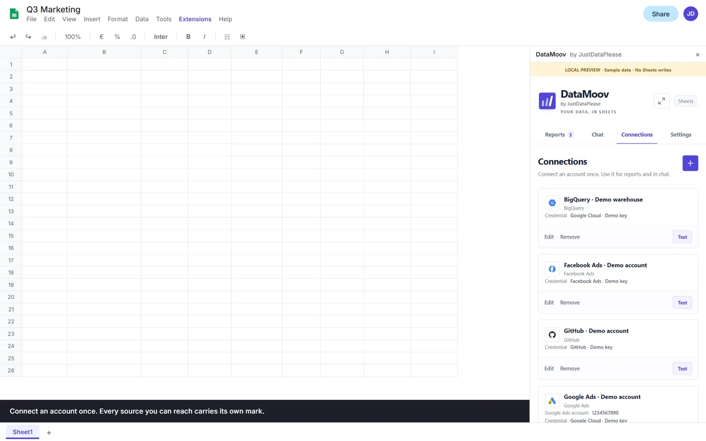
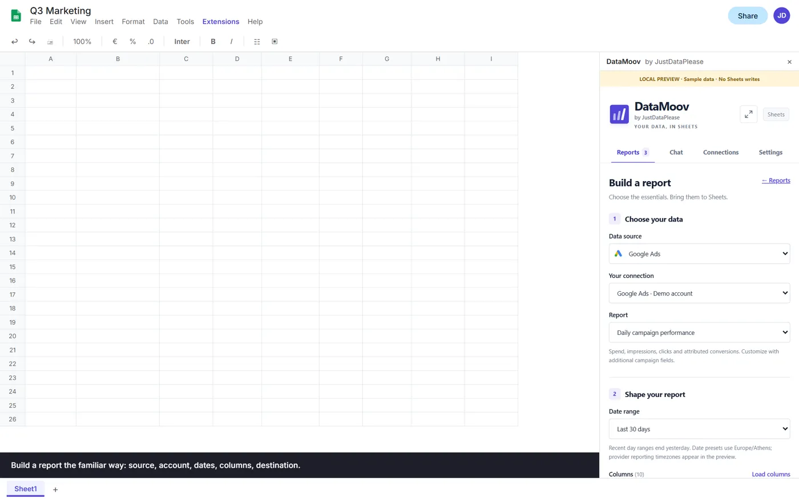
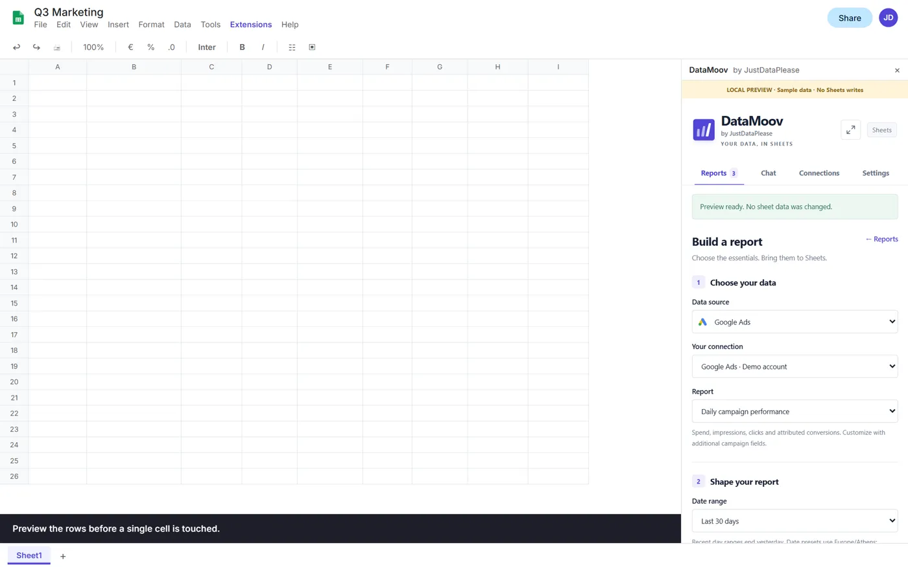
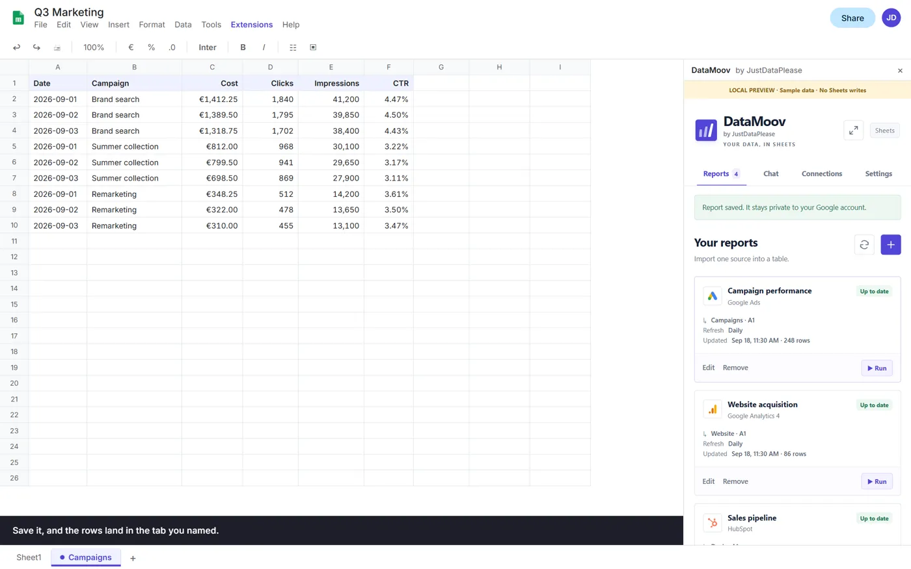
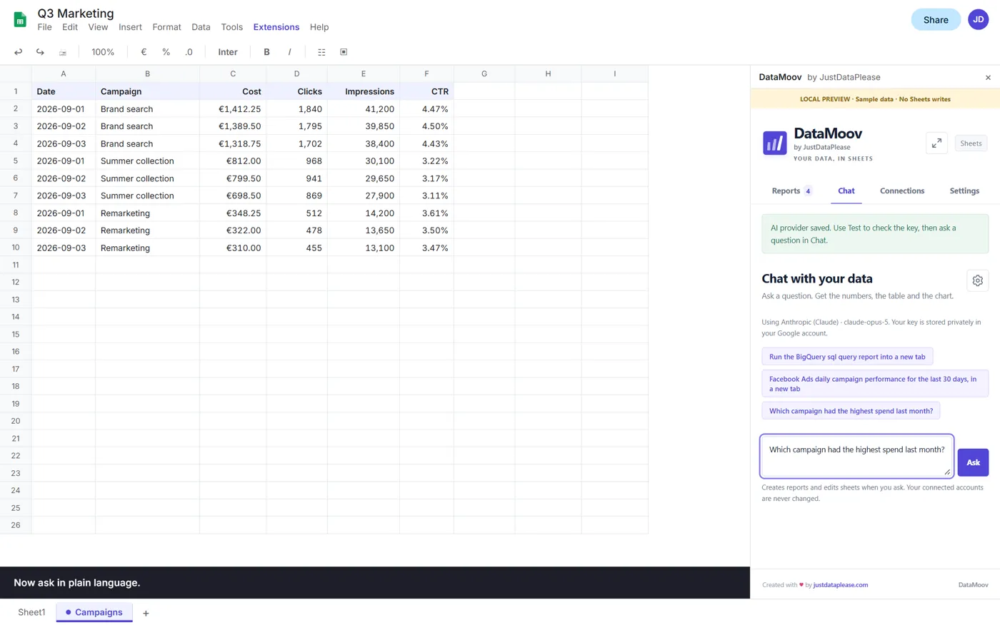
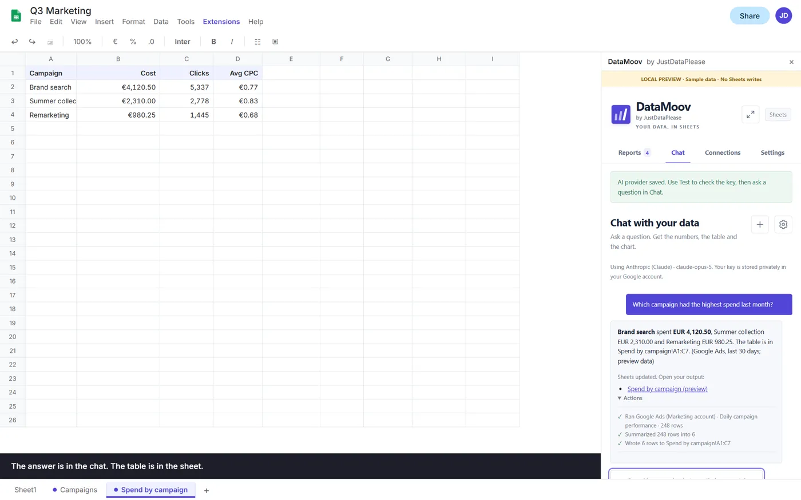
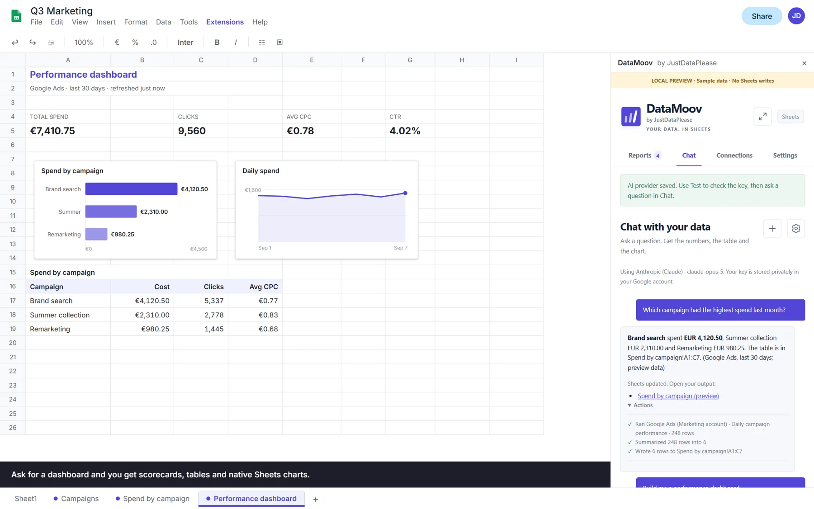
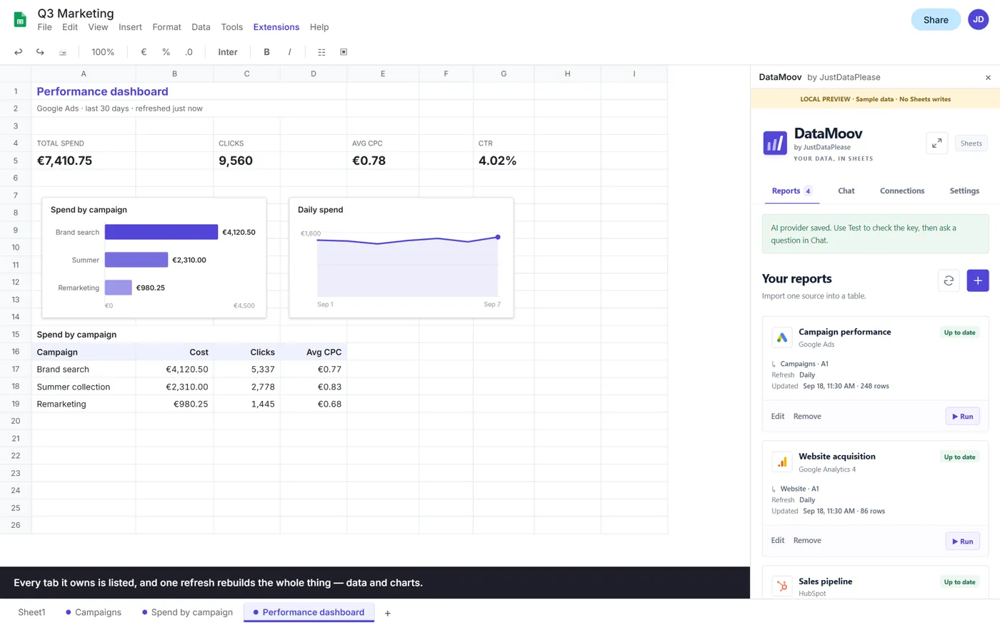

Ask the question where you already work.
Marketing · CRM · Databases
The full walkthrough — connect, build, ask, and a dashboard from one sentence. Sample data throughout; no provider or spreadsheet is contacted.
Connect
Pick a source and DataMoov tells you exactly where its credentials come from, with links straight to the right console. It tests the connection before it saves it, and the credential is reused by every connection that needs it.

Build
Source, account, report, date range, columns, destination. Preview the rows before a single cell is touched. Then a refresh — daily, hourly or on demand — replaces exactly the cells that report wrote last time and leaves every other cell alone.



Or skip it
A question in plain language runs a real report to answer it — the same validation, the same fetcher, the same writer. You see every step it took, the answer sits in the chat, and the table lands in its own tab.


Dashboards
One sentence produces a saved plan: datasets, scorecards, tables and native Sheets charts. Refresh rebuilds all of it — every tab it owns, data and charts together — without calling the model again.


A reporting tool earns trust by what it refuses to do. These are the guarantees the implementation actually makes.
DataMoov has no servers. Every request goes from your spreadsheet straight to the service you connected.
You bring your own service account, OAuth client or token. Keys are stored in your Google account and never returned to the browser.
The add-on asks only for spreadsheets, external requests, triggers and the sidebar — no Google API scope for any provider.
A report is fetched and validated in full before one atomic write. Too large for one run, and it pauses and resumes itself.
A refresh verifies the cells it wrote last time. Edit one inside that range and DataMoov stops rather than overwrite you.
Reports, dashboards, schedules and connections are private to you. Sharing the spreadsheet shares the output, nothing else.